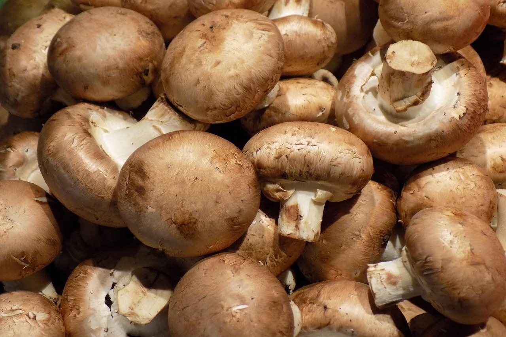
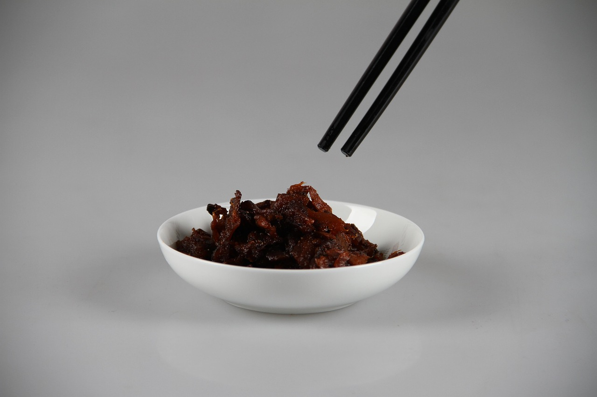
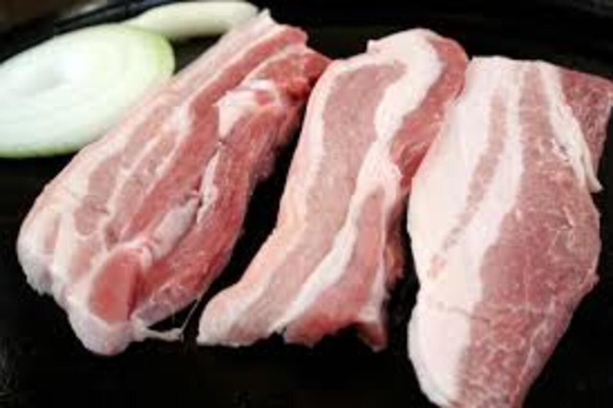
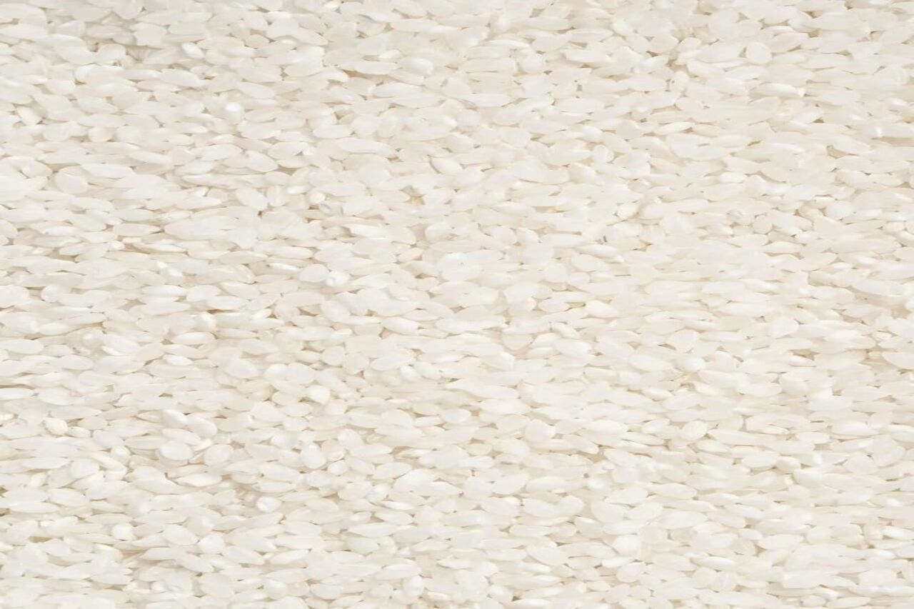
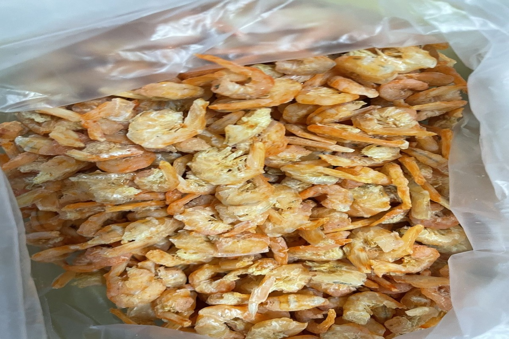
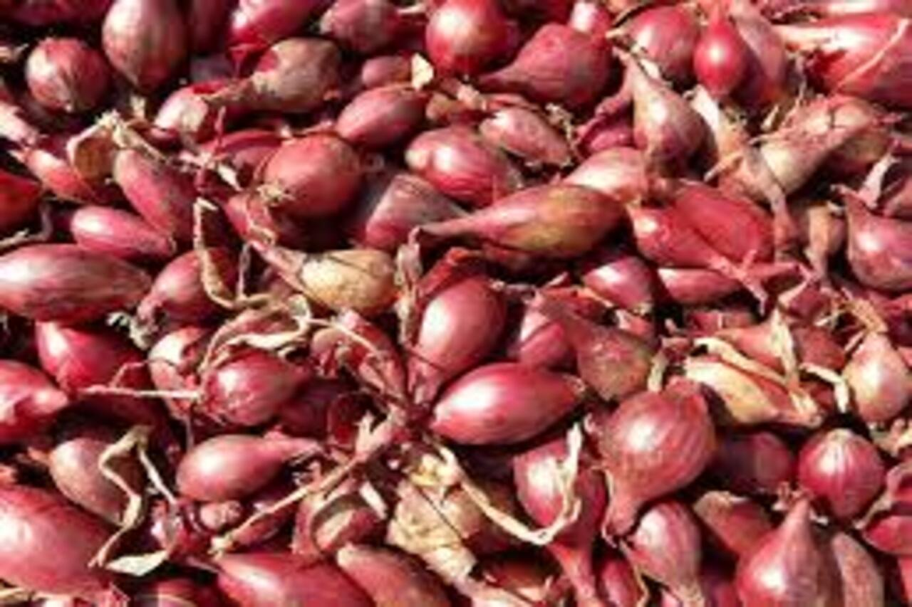

最新消息

油飯的每一口，都是台灣土地的味道。香菇的香氣、黑木耳的脆彈、豬肉的香嫩、紅蔥頭的提香，還有糯米的Q彈與蝦米的鮮味，這些食材相互交織，構成了道地油飯的豐富層次與美味。

香菇
埔里香菇生長在涼爽、濕潤的山區，利用高海拔、日夜溫差大及純淨水源，產出肉質厚實、香氣濃郁的優質香菇。菌傘淺褐色，皺摺明顯，口感軟Q，是台灣美味的食材，常用於油飯。

黑木耳
黑木耳是一種營養豐富的食用菌，生長於闊葉樹枯木上，外觀呈深褐至黑色，質地薄且皺褶。經泡水後膨脹柔軟，口感滑嫩且有脆彈感，經炒或蒸煮後不易軟爛，風味清淡。

豬肉
三元豬是台灣常見的混種豬，由長白豬、杜洛克與約克夏豬交配而來，肉質細嫩、油脂均勻，口感柔軟，生長快速、瘦肉比例高，適合用於油飯，蒸炊後不油膩，口感輕盈順口。

糯米
台灣長糯米主要栽培於中南部，米粒修長飽滿，蒸煮後黏性佳、口感Q彈，即使放涼也不易乾硬。花蓮富米米香淡雅，適合製作油飯、粽子與米糕等傳統料理。

蝦米
勾蝦外觀金黃，肉質細緻鮮甜，經乾燥處理後香氣濃郁，嚼勁十足。常用於油飯、滷味、湯品和炒菜，增添海鮮風味，尤其在宴席中深受喜愛，提升菜餚風味層次。

紅蔥頭
紅蔥頭為小巧紫紅色蔥類，香氣濃郁且經加熱後轉為甜味，常作為料理提香食材。尤其台南的紅蔥頭品質最佳，香氣飽滿。經炸製成油蔥酥，是台灣傳統料理中的重要調味元素。